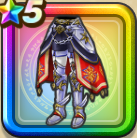

世界樹の鎧下【紅】
攻略班 8.0点 / 眠り耐性+5%呪い耐性+5%眠り耐性+5%呪い耐性+5%【バトマス】スキルの斬撃ダメージ+2%【海賊】スキルの斬撃ダメージ+2%イオ属性斬撃・体技ダメージ+4%【晴れ】イオ属性斬撃・体技ダメージ+2%
くわしい特徴
【レベル別習得スキル】 Lv1眠り耐性+5% Lv5戦闘終了時にMPを2回復する Lv8すばやさ+5 Lv10呪い耐性+5% Lv12【バトマス】スキルの斬撃ダメージ+2% Lv15【海賊】スキルの斬撃ダメージ+2% Lv18イオ属性斬撃・体技ダメージ+4% Lv20眠り耐性+5% Lv20【晴れ】イオ属性斬撃・体技ダメージ+2% Lv23守備力+7 Lv25呪い耐性+5% 【限界突破スキル】 1凸攻撃力+5 2凸守備力+5 3凸すばやさ+7 4凸さいだいHP+10